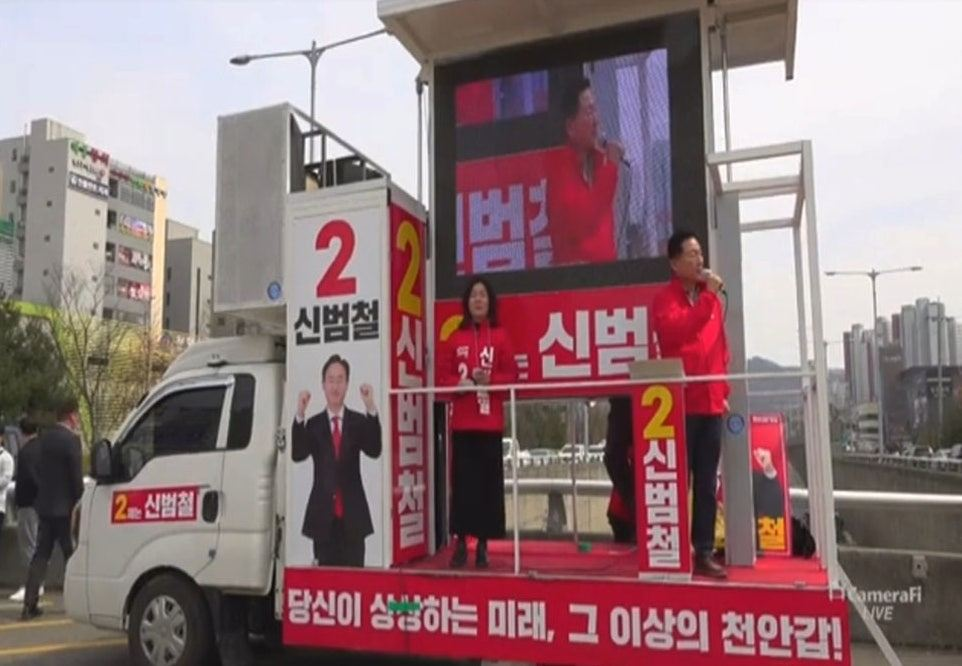
후보의 목소리를
가장 크고 선명하게
디자인·제작·배차·A/S까지 천안 자사 공장에서 직접 합니다. 선거 기간 내내 멈추지 않는 이동식 선거 캠프를 준비해 드립니다.
선거는 짧고, 차량은 확실해야 합니다
공장 직영 원스톱
후보 콘셉트에 맞춘 디자인부터 제작·배차까지 중간 과정 없이 빠르게
약 100대 동시 출고
대규모 선거 일정에도 대응하는 제작·업그레이드 인프라
전국 + 제주 배차
지역과 관계없이 일정에 맞춘 체계적인 배차
사각지대 없는 사운드
최신 음향·방송 장비로 소음은 줄이고 후보 음성은 또렷하게
안전 · 적법 차량
철저한 안전 점검과 구조 변경 승인, 관련 법규를 지킨 설비
전국 신속 A/S
선거 기간 돌발 상황에 즉시 대응하는 유지보수 팀 대기
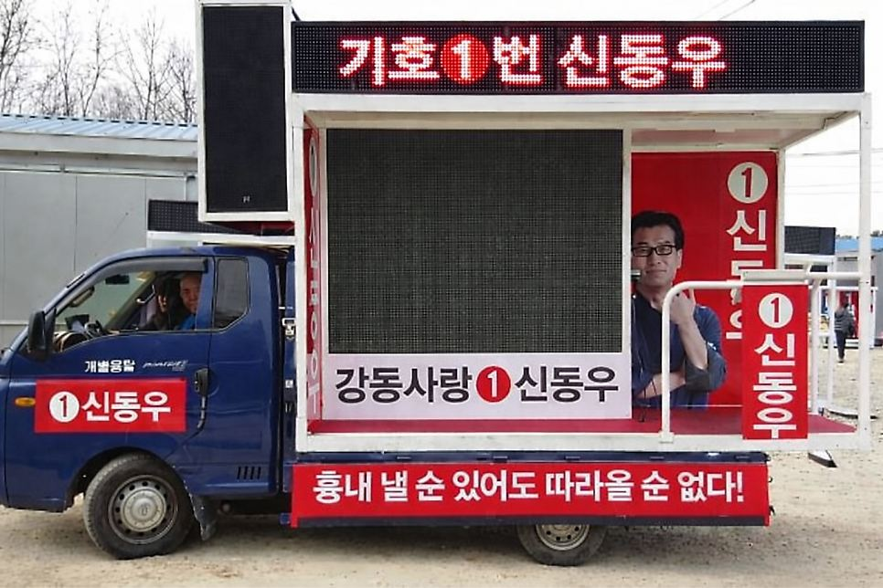
가장 많이 찾는
1톤 LED 리프트 유세차
보고 듣는 홍보를 한 대로. 지역구 구석구석을 누비는 기동력과 시선을 붙잡는 화면을 함께 갖췄습니다.
- 측면 LED 영상 전광판 — 후보 영상·공약 송출
- 반대편 파나플렉스 조명 홍보판
- 상단 문자 LED 전광판 · 확성 스피커
- 안전하게 설계된 연설 단상 · 무선 마이크
- 무소음 발전기 탑재 — 전기 걱정 없음
선거 유세 차량 사양
선거 규모와 유세 장소에 맞춰 고르세요. 모든 차량에 연단을 설치합니다.
| 구분 | 1톤 | 2.5톤 | 5톤 리프트형 |
|---|---|---|---|
| 연단 설치 | 3,400 × 2,000 × 1,700 | 4,800 × 2,300 × 2,000 | 9,900 × 2,800 × 4,200 |
| LED 전광판 | 100인치 (2.0 × 1.5m) | 120인치 (2.5 × 2.0m) | 300인치 (5.5 × 3.0m) |
| 화질 | 해상도 4,800 · 4mm | 해상도 3,800 · 3mm | 해상도 3,800 · 3mm |
| 확성장치 | 앰프 4kW · 스피커 1.2kW 믹서 7채널 · 마이크 3개 | 앰프 4kW · 스피커 2.4kW 믹서 7채널 · 마이크 3개 | 앰프 10kW · 스피커 4.8kW 믹서 24채널 · 마이크 10개 |
| 발전기 | 무소음 7kW | 무소음 7kW | 무소음 25kW |
| 홍보물 랩핑 | 3,400 × 2,000 × 1,700 | 4,800 × 2,300 × 2,000 | 9,900 × 2,800 × 4,200 |
※ 단위 mm. 각 차량의 컨디션에 따라 다를 수 있습니다.
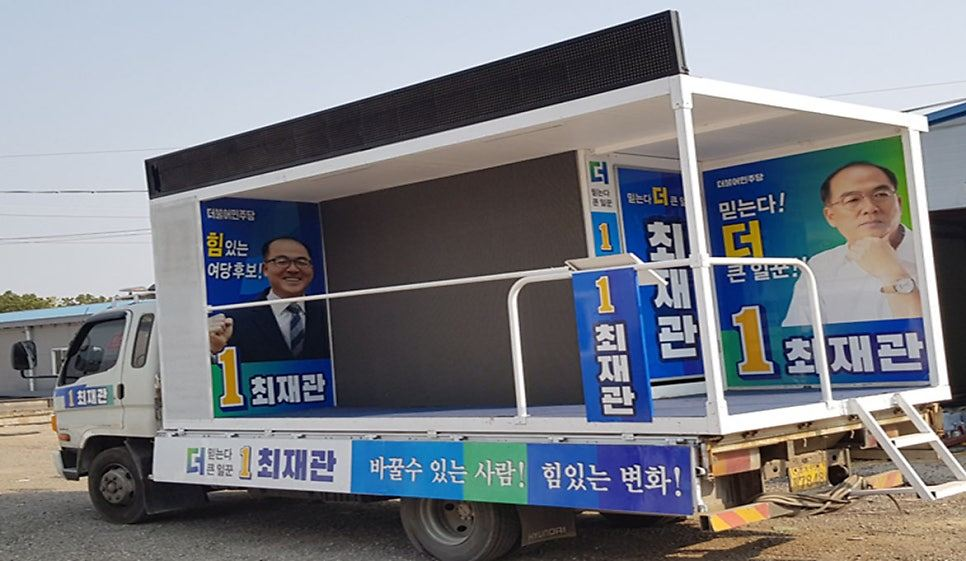
갖고 있는 트럭을
유세차로 바꿔 드립니다
선거 기간 내내 차량을 빌리기 부담스럽다면, 보유한 트럭에 합법적인 선거용 설비를 설치하세요. 업그레이드 차량도 임대 차량과 같은 사양·품질 기준으로 제작합니다.
- 차량 임대료 절감 — 소규모 캠프·예산이 적은 후보에게 유리
- 기사 포함 임대 계약 불필요
- 선거 후 재정비해 원래 트럭으로 다시 활용
- 관련 법규를 지킨 선거용 설비 적용
선거 유세차 출차 사례
사진을 누르면 크게 볼 수 있습니다.
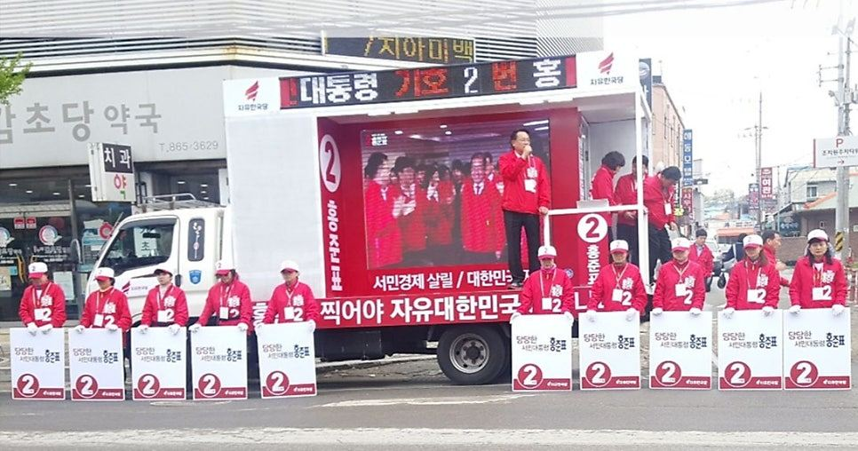
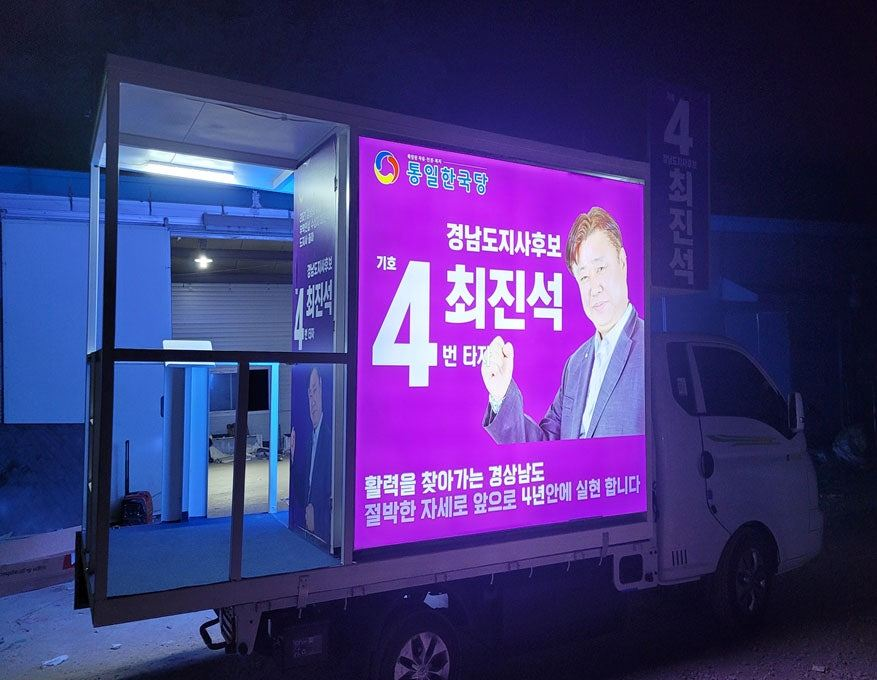
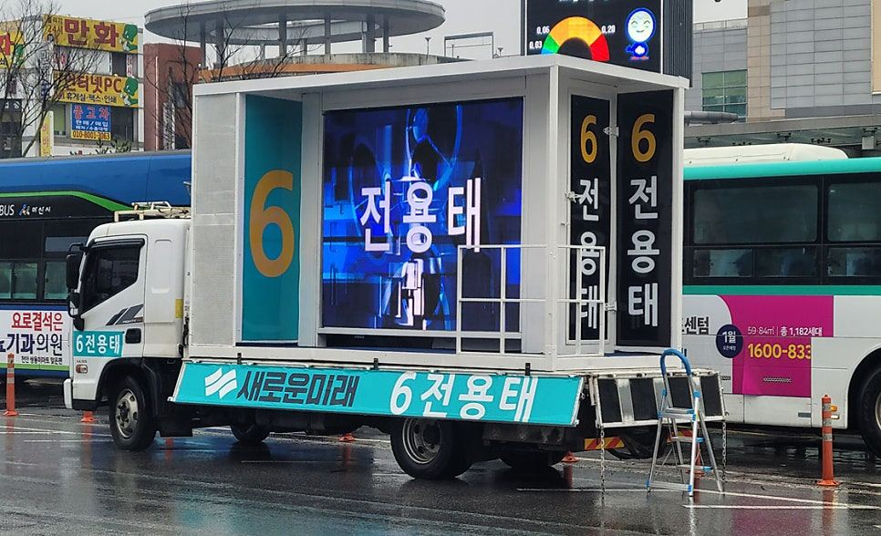
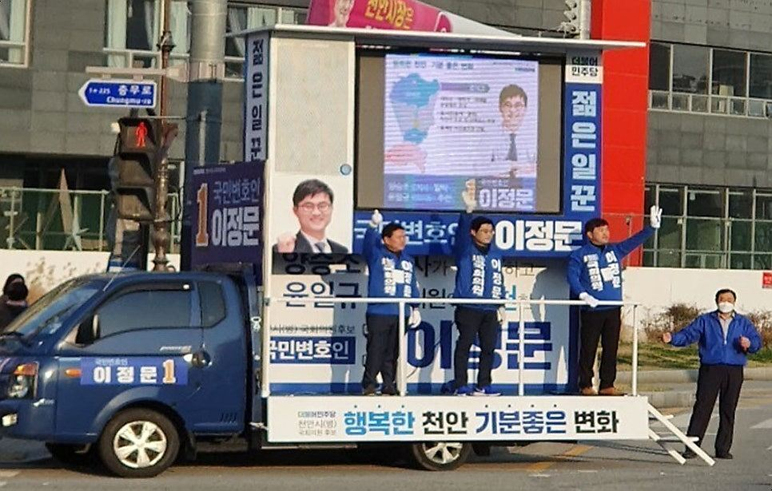
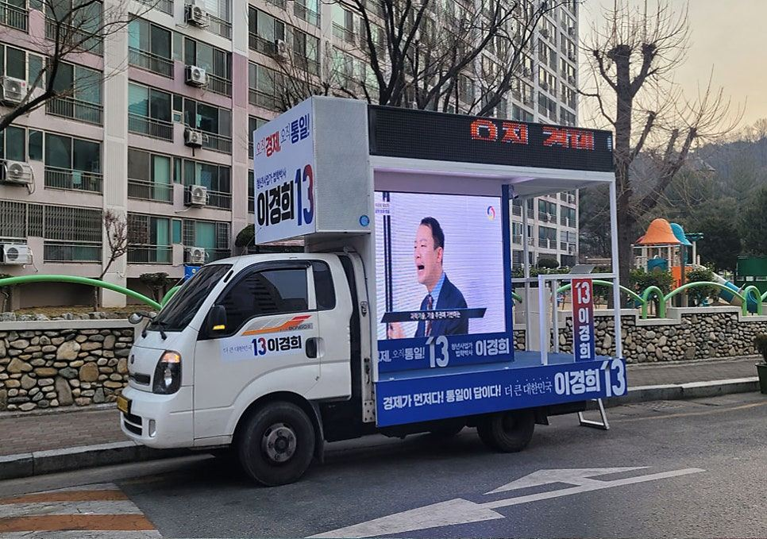
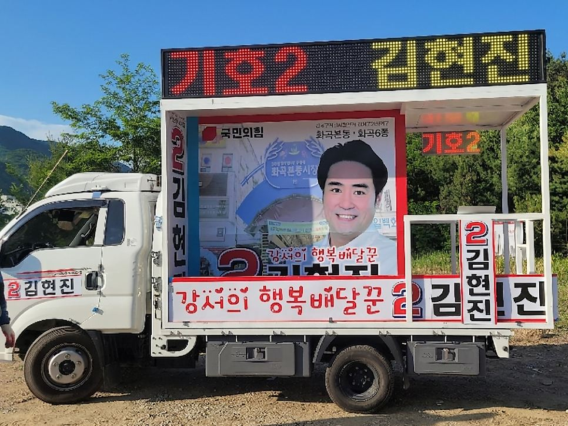
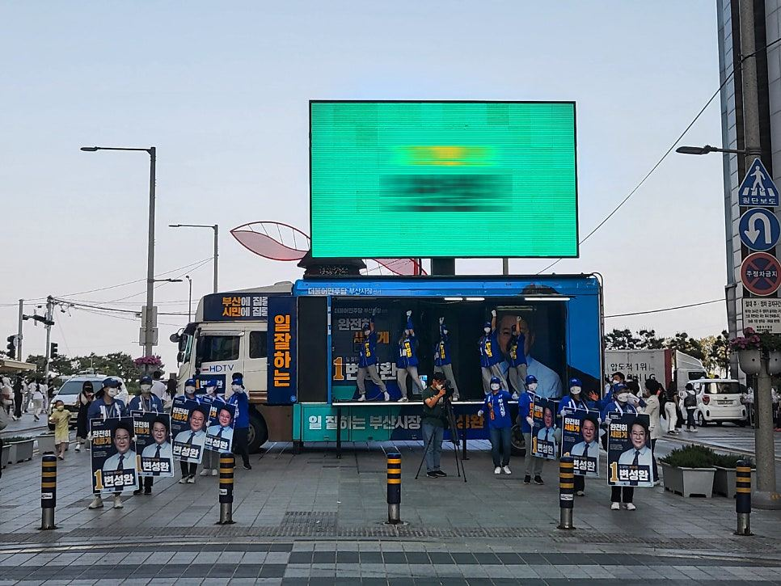
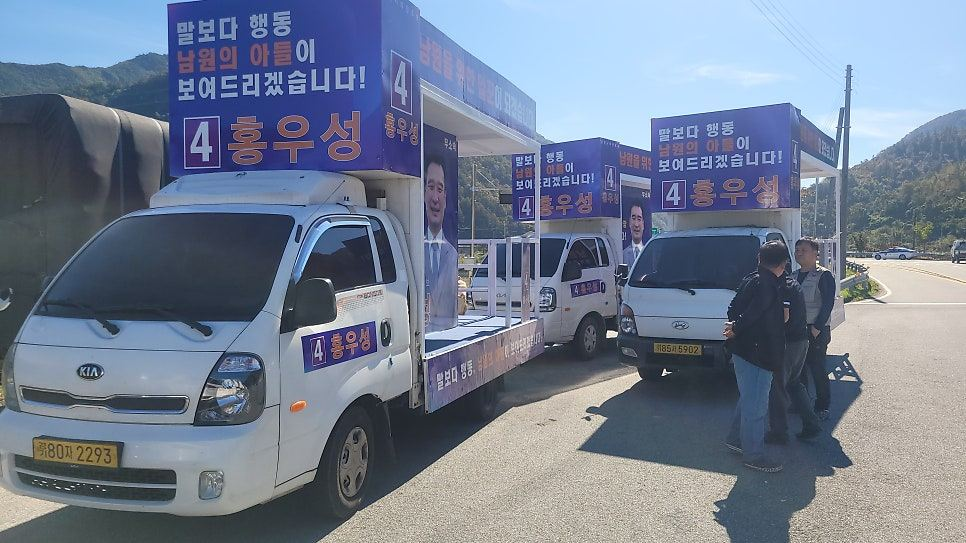
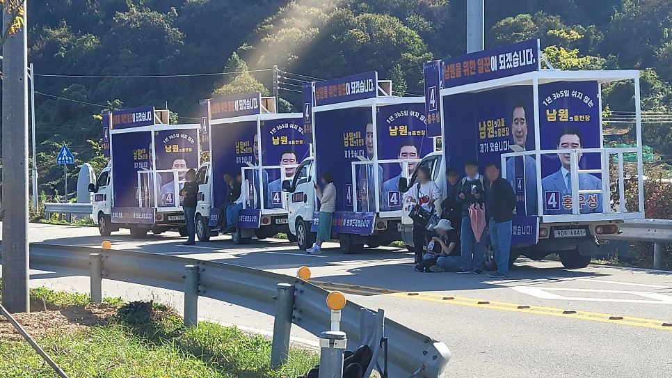
(주)드림애드컴은 특정 정당을 지지하지 않습니다. 사진은 특정 정당과 관계없이 2014년부터 진행한 선거 유세 차량 렌털 포트폴리오입니다.
선거 유세차 자주 묻는 질문
언제 예약해야 하나요?
선거철에는 차량과 제작 일정이 빠르게 마감됩니다. 출마가 정해지면 바로 상담해 주세요. 디자인·래핑 제작 기간까지 고려해 일정을 잡아 드립니다.
후보 디자인도 해 주나요?
네. 후보자의 콘셉트와 메시지를 반영한 맞춤 디자인으로 차량 래핑을 제작합니다.
선거 기간 중 고장이 나면요?
전국 어디든 즉시 대응하는 유지보수 팀이 대기합니다. 모든 차량은 출고 전 안전 점검을 거칩니다.
기존 트럭 개조는 몇 톤까지 되나요?
보유하신 트럭의 규격을 알려 주시면 설치 가능한 설비와 비용을 안내해 드립니다.
교육감·시장·도의원 선거 모두 되나요?
네. 선거 종류와 관계없이 지역 규모와 유세 방식에 맞는 차량을 제안합니다.